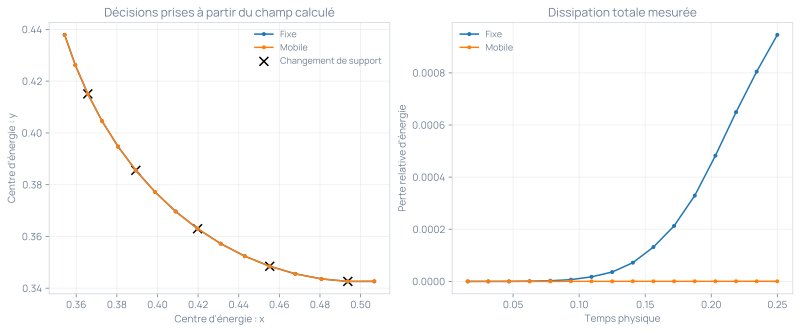
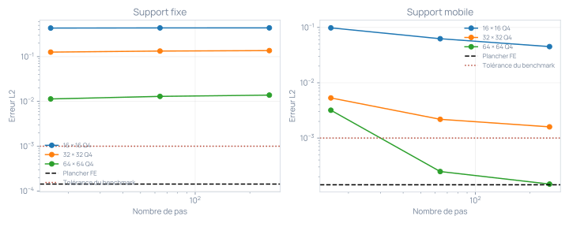
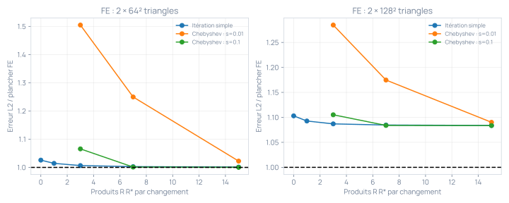
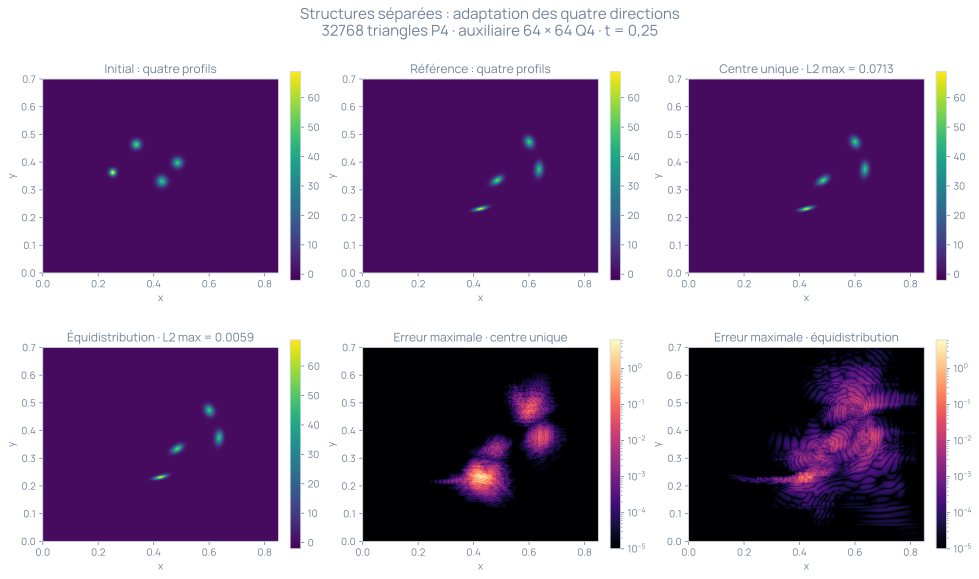
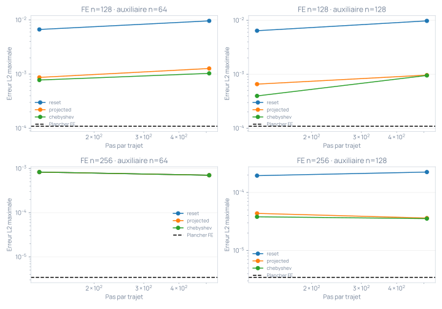
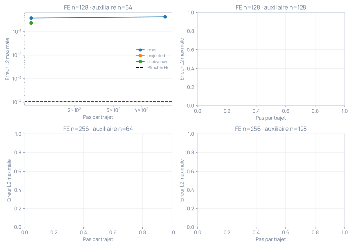
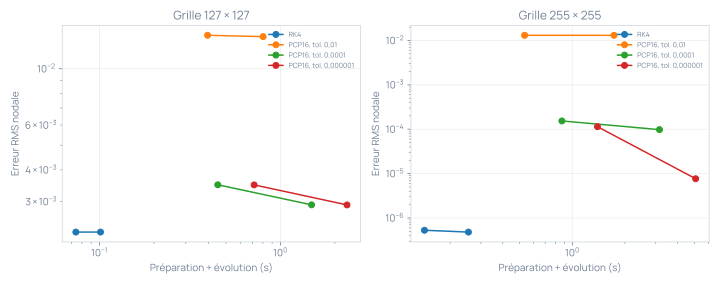
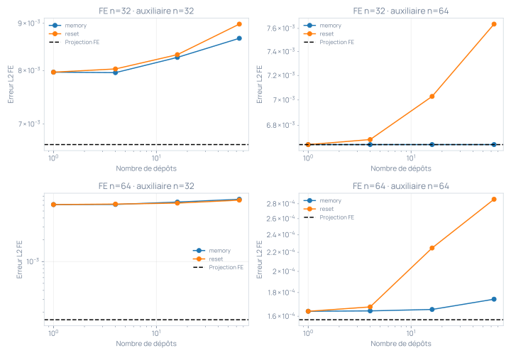

Résultats disponibles le 17/11/2026 à 01:24 (Europe/Paris). Calculs en double précision sur une RTX 5090. Les figures représentent les solutions calculées, avec une référence indépendante par caractéristiques.
Un support auxiliaire mobile résout le défaut observé lorsque la bosse quitte la zone fine d'une grille fixe. Le couplage FE avec mémoire accepte désormais un changement de support contractant, et un raffinement exactement emboîté sans perte d'énergie. Les formules s'exécutent sans racine ni inversion de matrice. Ces propriétés sont démontrées dans restart_theory.pdf et vérifiées sur GPU; elles n'établissent ni une nouveauté bibliographique, ni une convergence générale vers l'EDP.
Deux méthodes sont distinguées : le couplage avec mémoire maintient le champ FE à chaque changement; la référence d'advection pure transporte uniquement le champ DG auxiliaire entre une projection FE initiale et une projection FE finale. Cette seconde méthode est la plus rapide ici, mais elle n'offre pas les opérations physiques FE intermédiaires du couplage.
Les contre-tests exposent deux limites importantes : un transfert itératif tronqué peut dissiper même à support inchangé, et un contrôle de maillage tous les quatre pas modifie le problème d'adaptation lorsque le pas diminue. Une variante corrige le premier défaut au prix d'une non-linéarité; une ablation à intervalle physique fixé isole le second. La composition hamiltonienne par SVD perd la comparaison de coût et de précision contre Fourier/RK4 sur le vortex résolu. Ces résultats orientent la suite de la recherche.
Le domaine est le tore unité. Une vitesse cellulaire incompressible prescrite transporte jusqu'à t=0,25 une bosse de largeur 0,01, initialement centrée en (0,35; 0,45), de norme L2 proche de 1. L'espace FE principal possède 32768 triangles DG P4, soit 491520 coefficients par champ; la graduation fixe vaut 0,95. Le support principal auxiliaire comporte 64×64 cellules Q4, soit 102400 valeurs par champ. Deux supports orientés supplémentaires servent aux cisaillements diagonaux. Les méthodes n'ont donc pas le même nombre d'inconnues.
Le centre circulaire de l'énergie est calculé à partir de la solution, tous les quatre pas. Le support se déplace lorsque ce centre s'éloigne de plus de 0,03. Ce critère convient à une structure localisée; il n'est pas un estimateur d'erreur et ne traite pas plusieurs structures éloignées. La référence intègre les caractéristiques sur GPU par 512 pas RK4; les erreurs sont intégrées avec quadrature de degré 20 et subdivision indépendante. Les extrema sont échantillonnés.


Trois répétitions alternent DG eulérien et support mobile pour 1, 4 et 16 champs distincts et proches spatialement (graine 752). Chaque champ doit satisfaire L2 ≤ 0,001. Le coût inclut construction des opérateurs, détection initiale du centre, évolution, adaptations et transfert final. Le maillage FE et la projection initiale communs, ainsi que les diagnostics de référence, sont exclus des deux côtés. La compilation CUDA utilise le cache; ce ne sont pas des mesures de premier lancement sans cache.

| Champs | DG (s) | Mobile (s) | Ratio | L2 DG max | L2 mobile max |
|---|---|---|---|---|---|
| 1 | 5.475 | 0.6195 | 8.838 | 0.0002865 | 0.0002478 |
| 4 | 7.908 | 0.5916 | 13.37 | 0.0008215 | 0.0004813 |
| 16 | 21.12 | 0.6091 | 34.67 | 0.000877 | 0.0004549 |
Le pas DG retenu passe un contrôle de croissance sur champs aléatoires et la tolérance finale. Le réglage plus agressif (échelle 12) est rejeté : le contrôle aléatoire révèle une croissance d'énergie supérieure au seuil. Ce contrôle fini n'est pas un certificat spectral de stabilité. La variante mobile à 16 pas échoue à la tolérance; le benchmark utilise 64 pas.
L'état est représenté par trois tableaux (v,w,a), avec v=R*w+(I−R*R)a. Son énergie est ||w||²+||a||²−||Ra||². La remise à zéro conserve v mais perd toute la mémoire invisible dans ce champ. Le transfert contractant conserve une partie de cette mémoire. En cas de raffinement exactement emboîté, l'injection corrige w par les nouveaux modes de a et préserve toute l'énergie augmentée.
| FE n | Remise à zéro L2 | Mémoire L2 | Plancher FE |
|---|---|---|---|
| 64 | 0.006198 | 0.003851 | 0.003729 |
| 128 | 0.0001984 | 0.0001602 | 0.0001427 |

Une projection itérative supplémentaire utilise le recouvrement des deux espaces dans le même L2. Son filtre spectral contractant conserve davantage de mémoire lorsque le nombre d'itérations augmente. Cela ne garantit pas une diminution de l'erreur de transport. Les résultats ci-dessous sont rapportés séparément.
| FE n | Itérations | L2 | Coût total (s) |
|---|---|---|---|
| 64 | 1 | 0.003825 | 0.9891 |
| 64 | 2 | 0.003782 | 0.9307 |
| 64 | 4 | 0.003753 | 0.9062 |
| 64 | 8 | 0.003739 | 0.9432 |
| 64 | 16 | 0.003733 | 0.9106 |
| 128 | 1 | 0.0001574 | 1.923 |
| 128 | 2 | 0.000156 | 1.87 |
| 128 | 4 | 0.0001551 | 1.911 |
| 128 | 8 | 0.0001548 | 1.931 |
| 128 | 16 | 0.0001547 | 1.9 |

Une réaction de taux 1+0,5 sin(2πx) est appliquée par l'exponentielle exacte de son générateur Galerkin local, en deux demi-pas autour de chaque advection. Chaque mise à jour FE est réinjectée dans la mémoire. La référence indépendante intègre simultanément la trajectoire et l'exposant de réaction. L'énergie doit décroître; la masse n'est plus conservée par cette EDP.

Le carré d'un résidu de Chebyshev fournit un filtre compris entre zéro et un sur tout le spectre admissible, même sous l'échelle de ciblage choisie. Il conserve donc la contraction et l'observation FE à chaque troncature. Les techniques polynomiales sont classiques; l'intérêt mesuré ici concerne leur insertion dans le transfert de mémoire. L'échelle 0,1 fonctionne mieux que 0,01 sur ce cas; aucune supériorité universelle du réglage n'est établie.

Les trois transferts subissent chacun 2000 changements entre trois supports de graduations 0, 0,95 et 0,9999, entrelacés avec cisaillements et rotations locales de modes FE. Ces rotations sont un test algébrique isométrique, pas une réaction physique. Quatre champs aléatoires sont suivis; le champ FE est inchangé bit à bit au transfert.
| Transfert | Changements | Défaut FE relatif max | Défaut masse max |
|---|---|---|---|
| partial | 2000 | 6.88e-17 | 4.846e-14 |
| richardson | 2000 | 7.58e-17 | 4.802e-14 |
| chebyshev | 2000 | 8.025e-17 | 4.813e-14 |
Quatre champs distincts sont maintenant initialisés avec des centres espacés jusqu'à 0,15 autour de la position centrale. Le centre d'énergie unique ne suffit plus. Une alternative répartit les intervalles selon les marginales d'énergie dans x, y, x+y et x−y : histogrammes périodiques sur GPU, lissage gaussien de largeur 0,005, puissance 1/4, fond uniforme de 25 %, puis inversion de la masse cumulée. C'est une heuristique d'équidistribution; la stabilité vient des projections contractantes, pas d'une prétendue estimation d'erreur par ce moniteur.


Extension au couplage FE : 12 cas disponibles avec quatre structures séparées, avec ou sans réaction. Le tableau inclut le maillage FE raffiné pour lever le précédent plancher. Les erreurs sont prises sur le pire des quatre champs.
| FE n | Réaction | Support | Itér. | L2 max | Plancher max |
|---|---|---|---|---|---|
| 128 | non | centre | 8 | 0.07137 | 0.005891 |
| 128 | non | énergie | 0 | 0.008536 | 0.005891 |
| 128 | non | énergie | 8 | 0.005928 | 0.005891 |
| 128 | oui | centre | 8 | 0.05704 | 0.004135 |
| 128 | oui | énergie | 0 | 0.005985 | 0.004135 |
| 128 | oui | énergie | 8 | 0.004161 | 0.004135 |
| 256 | non | centre | 8 | 0.0734 | 0.0003436 |
| 256 | non | énergie | 0 | 0.0009183 | 0.0003436 |
| 256 | non | énergie | 8 | 0.0009188 | 0.0003436 |
| 256 | oui | centre | 8 | 0.05817 | 0.0002408 |
| 256 | oui | énergie | 0 | 0.000704 | 0.0002408 |
| 256 | oui | énergie | 8 | 0.0007014 | 0.0002408 |
Le raffinement FE révèle une erreur auxiliaire auparavant masquée. L'étude suivante augmente séparément le nombre de cellules auxiliaires et le nombre de pas, sur le maillage FE n=256. Une amélioration de mémoire ne peut pas supprimer une erreur d'advection ou de résolution dans le support auxiliaire.
| Aux. n | Pas | Réaction | Itér. | L2 max | Plancher max |
|---|---|---|---|---|---|
| 64 | 256 | non | 0 | 0.0005846 | 0.0003436 |
| 64 | 256 | non | 8 | 0.0005897 | 0.0003436 |
| 64 | 256 | oui | 0 | 0.0004556 | 0.0002408 |
| 64 | 256 | oui | 8 | 0.0004553 | 0.0002408 |
| 128 | 128 | non | 0 | 0.0004025 | 0.0003436 |
| 128 | 128 | non | 8 | 0.0003467 | 0.0003436 |
| 128 | 128 | oui | 0 | 0.0002809 | 0.0002408 |
| 128 | 128 | oui | 8 | 0.000243 | 0.0002408 |
| 128 | 256 | non | 0 | 0.0004471 | 0.0003436 |
| 128 | 256 | non | 8 | 0.0003447 | 0.0003436 |
| 128 | 256 | oui | 0 | 0.0003117 | 0.0002408 |
| 128 | 256 | oui | 8 | 0.0002416 | 0.0002408 |
Le flot autonome est suivi pendant une durée T, puis sa vitesse est inversée pendant la même durée. La solution exacte finale est le profil initial : aucune intégration de caractéristiques n'est nécessaire pour cette référence. Les partitions restent adaptées au champ calculé pendant les deux trajets. La dissipation et les pertes de mémoire ne s'annulent pas lors du retour.
| Durée aller | Transfert | Changements | L2 max | Retour FE max |
|---|---|---|---|---|
| 0.25 | reset | 63 | 0.006669 | 0.006668 |
| 0.25 | projected | 63 | 0.0008691 | 0.0008622 |
| 0.25 | chebyshev | 63 | 0.0007821 | 0.0007821 |
| 0.5 | reset | 63 | 0.06498 | 0.06498 |
| 0.5 | projected | 63 | 0.01545 | 0.01545 |
| 0.5 | chebyshev | 63 | 0.01491 | 0.01491 |
Campagne de déformation élargie : 29 cas sur 48 enregistrés. Les erreurs affichées portent sur le pire des quatre champs; les cas qui n'atteignent pas la tolérance restent présents.
Le contrôle de maillage de cette campagne a lieu tous les quatre pas numériques. Réduire le pas augmente donc aussi la fréquence physique de contrôle : ces courbes seules n'isolent pas l'erreur temporelle. Certains cas à 512 pas déclenchent presque un remaillage à chaque contrôle et deviennent plus coûteux et moins précis. L'ablation suivante teste séparément ce mécanisme.


Un premier test supprime toute advection et reconstitue vingt-quatre fois le support à partir du même champ, avec projection entre supports. Il compare 5 et 12 points de Gauss par direction, ainsi qu'un plancher nul ou égal à un millionième de l'énergie marginale moyenne avant la racine quatrième. La surintégration conserve l'intégrale du carré du polynôme mais affine son histogramme spatial. Un déplacement résiduel dans ce test provient de la boucle moniteur-projection.

Sur les supports n=64 et n=128, le déplacement maximal dans ce test immobile vaut 0.002068, à comparer au seuil 0,01 du contrôleur. La boucle appliquée au champ initial ne reproduit donc pas à elle seule les grands mouvements observés pendant l'évolution. Ce test ne suffit pas à attribuer leur cause à la quadrature.
L'aller-retour utilise ensuite 128 pas avec contrôle tous les 4 pas, ou 512 pas avec contrôle tous les 4 ou 16 pas. Les réglages (128,4) et (512,16) ont le même intervalle physique entre contrôles. Le champ FE, le support auxiliaire et les huit itérations de transfert de mémoire sont identiques.
| Pas | Intervalle | Gauss | Plancher | Changes | L2 max | Temps (s) |
|---|---|---|---|---|---|---|
| 128 | 4 | 5 | 0 | 63 | 0.0008694 | 17.24 |
| 128 | 4 | 12 | 0 | 63 | 0.0008672 | 17.24 |
| 128 | 4 | 5 | 1e-06 | 62 | 0.00102 | 16.87 |
| 128 | 4 | 12 | 1e-06 | 62 | 0.001009 | 16.94 |
| 512 | 4 | 5 | 0 | 203 | 0.001269 | 54.89 |
| 512 | 4 | 12 | 0 | 203 | 0.001266 | 55.3 |
| 512 | 4 | 5 | 1e-06 | 196 | 0.001354 | 53.02 |
| 512 | 4 | 12 | 1e-06 | 196 | 0.001351 | 53.53 |
| 512 | 16 | 5 | 0 | 63 | 0.0008708 | 17.49 |
| 512 | 16 | 12 | 0 | 63 | 0.000868 | 17.58 |
| 512 | 16 | 5 | 1e-06 | 62 | 0.001023 | 17.18 |
| 512 | 16 | 12 | 1e-06 | 62 | 0.001013 | 17.26 |
Des poids d'énergie positifs sont portés par des points matériels suivis par les caractéristiques. L'incompressibilité conserve ces poids. Ce diagnostic n'utilise aucune évolution FE/DG ni aucun remaillage du champ. Les grands déplacements des partitions sont reproduits à 512 et 1024 points par direction. Décaler la coupure périodique réduit le mouvement des quantiles diagonaux : une part importante du phénomène est géométrique, et non une instabilité de projection.

Remplacer l'énergie auxiliaire par celle du champ FE observé laisse pratiquement inchangés le nombre de changements et l'erreur de retour. Le bruit propre à la représentation auxiliaire ne suffit donc pas à expliquer le phénomène.
| Pas | Intervalle | Changements | L2 max |
|---|---|---|---|
| 128 | 4 | 63 | 0.0008729 |
| 512 | 4 | 202 | 0.001273 |
| 512 | 16 | 63 | 0.0008747 |
Le filtre polynomial initial démarre de zéro. Même quand l'ancien et le nouveau support coïncident, il multiplie chaque mode de mémoire par un facteur inférieur à un : un nombre fini d'itérations introduit donc un défaut pour une opération géométriquement nulle. Ce défaut est distinct de la stabilité énergétique. Le contrôle ci-dessous utilise des états aléatoires après transport et physique, et calcule leur distance dans un espace ambiant commun.
| Degré | Transfert | Distance au carré | Perte d'énergie |
|---|---|---|---|
| 1 | cold | 0.004596 | 0.02471 |
| 1 | warm | -2.22e-15 | 4.441e-16 |
| 2 | cold | 0.02681 | 0.09344 |
| 2 | warm | 3.553e-15 | 2.665e-15 |
| 4 | cold | 0.07624 | 0.2278 |
| 4 | warm | 2.487e-14 | 1.421e-14 |
Une variante initialise l'itération avec la représentation auxiliaire précédente transférée, puis borne radialement son énergie invisible par celle de l'ancien état. Elle conserve le champ FE et son énergie augmentée, et devient l'identité ambiante à support inchangé. Le facteur dépend de l'état : cette variante est non linéaire, et aucune contraction de la distance entre deux solutions n'est déduite de son seul bilan d'énergie. La correction d'un défaut d'identité ne garantit pas une meilleure erreur physique.
Un contre-exemple GPU dans un espace ambiant de dimension trois confirme cette limite : le rapport de distance entre deux états vaut 1.94528, alors que l'énergie de chaque état reste bornée. La variante n'est donc pas non expansive.
| Pas | Intervalle | Transfert | Changements | L2 max | Temps (s) |
|---|---|---|---|---|---|
| 128 | 4 | projected | 63 | 0.0008701 | 16.8 |
| 128 | 4 | warm | 63 | 0.001044 | 16.98 |
| 512 | 4 | projected | 203 | 0.00127 | 54.56 |
| 512 | 4 | warm | 202 | 0.001246 | 54.63 |
| 512 | 16 | projected | 63 | 0.0008703 | 17.23 |
| 512 | 16 | warm | 63 | 0.0009124 | 17.36 |
Une nouvelle bosse centrée en (0,8; 0,75) est ajoutée par une source FE impulsionnelle à t=0,125, après un début de transport d'une autre bosse. Le maillage triangulaire est perturbé, sans graduation. L'adaptation compare l'énergie de l'état auxiliaire à celle du champ FE observé. Le second moniteur peut voir une structure créée par la physique FE avant qu'elle soit bien représentée dans l'auxiliaire. La référence transporte séparément les deux profils analytiques.
La source injecte de l'énergie. Son travail est mesuré par la différence d'énergie FE, et l'identité entre ce travail et la variation de l'énergie augmentée est contrôlée. Le bilan de masse ajoute la masse de la source. Une contraction globale n'est pas revendiquée à travers cette impulsion.
| FE n | Aux. n | Largeur | Moniteur | L2 | Plancher FE |
|---|---|---|---|---|---|
| 128 | 32 | 0.003 | auxiliary | 0.0818 | 0.03284 |
| 128 | 32 | 0.003 | fe | 0.03406 | 0.03284 |
| 128 | 32 | 0.006 | auxiliary | 0.003358 | 0.001243 |
| 128 | 32 | 0.006 | fe | 0.003001 | 0.001243 |
| 128 | 64 | 0.003 | auxiliary | 0.03355 | 0.03284 |
| 128 | 64 | 0.003 | fe | 0.03354 | 0.03284 |
| 128 | 64 | 0.006 | auxiliary | 0.001366 | 0.001243 |
| 128 | 64 | 0.006 | fe | 0.001362 | 0.001243 |
| 256 | 32 | 0.003 | auxiliary | 0.0767 | 0.001572 |
| 256 | 32 | 0.003 | fe | 0.005019 | 0.001572 |
| 256 | 32 | 0.006 | auxiliary | 0.00337 | 5.457e-05 |
| 256 | 32 | 0.006 | fe | 0.003038 | 5.457e-05 |
| 256 | 64 | 0.003 | auxiliary | 0.001711 | 0.001572 |
| 256 | 64 | 0.003 | fe | 0.001681 | 0.001572 |
| 256 | 64 | 0.006 | auxiliary | 0.0004428 | 5.457e-05 |
| 256 | 64 | 0.006 | fe | 0.000418 | 5.457e-05 |
Une fonction de courant somme de produits a(y)b(x) transforme l'advection en somme de commutateurs de cisaillements. Le prototype réutilise une formule publiée de Casas, Escorihuela-Tomàs et Moreno Casares (2025), PCP16. Ses seize cisaillements Fourier sont unitaires; son ordre cinq dans la racine du pas correspond à l'ordre deux dans le temps physique, à grille fixée. Les coefficients et cette théorie de composition sont attribués aux auteurs. L'intérêt recherché ici est une extension des vitesses admissibles dans le couplage FE, dont la nouveauté et l'avantage de coût ne sont pas établis.
Les tests emploient un ou deux tourbillons gaussiens périodiques, dont la fonction de courant possède de nombreux modes de Fourier mais peu de produits séparables. Un oracle matriciel GPU contrôle le commutateur, l'unitarité, les constantes, l'inverse et le défaut temporel. Une intégration indépendante de caractéristiques contrôle l'erreur physique. Une erreur nodale RMS est distinguée de l'erreur FE intégrée.

| Produits | FE n | Pas | L2 FE | Plancher FE |
|---|---|---|---|---|
| 1 | 32 | 32 | 0.006844 | 0.005715 |
| 1 | 32 | 128 | 0.006403 | 0.005715 |
| 1 | 32 | 512 | 0.006401 | 0.005715 |
| 1 | 64 | 32 | 0.002492 | 0.000501 |
| 1 | 64 | 128 | 0.0005395 | 0.000501 |
| 1 | 64 | 512 | 0.0005217 | 0.000501 |
| 2 | 32 | 32 | 0.006035 | 0.005561 |
| 2 | 32 | 128 | 0.006008 | 0.005561 |
| 2 | 32 | 512 | 0.006008 | 0.005561 |
| 2 | 64 | 32 | 0.0007044 | 0.0003857 |
| 2 | 64 | 128 | 0.0004009 | 0.0003857 |
| 2 | 64 | 512 | 0.0003996 | 0.0003857 |
Le vortex comporte un facteur exponentiel en cos(2π(x+y)), donc une séparation de rang fini n'est plus prescrite. Une SVD GPU de la fonction de courant sélectionne un préfixe selon l'erreur L2 de vitesse spectrale. L'orthogonalité permet de sommer exactement les énergies des termes rejetés. Ce choix ne minimise pas le rang en norme H1. Le comparateur Fourier utilise la forme antisymétrique de l'advection et RK4, avec un pas borné par la norme de son générateur. Les deux chemins utilisent des graphes CUDA et les mêmes grilles.

| Grille | Méthode | Rang | Pas | Erreur vitesse | L2 champ | Temps (s) |
|---|---|---|---|---|---|---|
| 127 | pcp16 | 4 | 64 | 0.0004091 | 0.01354 | 0.3958 |
| 127 | pcp16 | 4 | 256 | 0.0004091 | 0.01338 | 0.8027 |
| 127 | pcp16 | 7 | 64 | 4.18e-06 | 0.003493 | 0.4507 |
| 127 | pcp16 | 7 | 256 | 4.18e-06 | 0.002914 | 1.487 |
| 127 | pcp16 | 11 | 64 | 2.247e-08 | 0.003491 | 0.7156 |
| 127 | pcp16 | 11 | 256 | 2.247e-08 | 0.002911 | 2.334 |
| 255 | pcp16 | 4 | 64 | 0.0004091 | 0.01309 | 0.5336 |
| 255 | pcp16 | 4 | 256 | 0.0004091 | 0.01306 | 1.731 |
| 255 | pcp16 | 7 | 64 | 4.18e-06 | 0.0001535 | 0.8715 |
| 255 | pcp16 | 7 | 256 | 4.18e-06 | 9.78e-05 | 3.151 |
| 255 | pcp16 | 11 | 64 | 2.247e-08 | 0.0001139 | 1.393 |
| 255 | pcp16 | 11 | 256 | 2.247e-08 | 7.658e-06 | 5.073 |
| 127 | rk4 | — | 101 | — | 0.002276 | 0.07404 |
| 127 | rk4 | — | 202 | — | 0.002277 | 0.1014 |
| 255 | rk4 | — | 204 | — | 5.284e-07 | 0.1428 |
| 255 | rk4 | — | 407 | — | 4.806e-07 | 0.2547 |
Sur ce vortex résolu, Fourier/RK4 donne une erreur 5.284e-07 en 0.1428 s, contre 7.658e-06 en 5.073 s pour PCP16. Le second coûte 35.5 fois plus et reste moins précis dans cette comparaison. Les 336 cisaillements par pas rendent cette compression SVD non compétitive ici. Sa conservation d'énergie ne suffit pas à justifier sa poursuite comme voie de performance prioritaire.
Le flot exact de la vitesse (0,2 sin(2πx), 0) transporte une densité jusqu'à t=1. La référence comprend le Jacobien inverse : l'équation conservative diffère ici de l'équation advective. Les intervalles de départ sont découpés aux préimages des arêtes d'arrivée avant quadrature de Gauss. Les matrices unidimensionnelles sont construites et appliquées sur GPU. Un raffinement de quadrature 16 vers 32 contrôle cette intégration non polynomiale; un calcul de valeurs singulières vérifie la borne de croissance dans la norme de masse sur le petit cas de contrôle.
Le couplage conserve le défaut FE initial tandis que le support DG évolue. Le contrôle remet la mémoire à zéro après chaque pas. La masse doit rester constante; l'énergie augmentée peut croître physiquement, avec une borne exp(2π × 0,2 × t) sur son rapport. Les maillages FE sont perturbés. Cette construction traite un flot séparable exact; une vitesse compressible FE générale n'est pas couverte.

Sur les 32 cas enregistrés, l'écart absolu maximal de masse vaut 8.47e-15; le rapport d'énergie maximal vaut 2.91183, pour une borne physique 3.51359.
| Degré | Raffinement | Défaut Gram | Défaut observation |
|---|---|---|---|
| 1 | global | 1.221e-15 | 6.661e-16 |
| 1 | local | 7.772e-16 | 5.551e-16 |
| 2 | global | 2.22e-15 | 1.11e-15 |
| 2 | local | 1.665e-15 | 1.221e-15 |
| 4 | global | 4.219e-15 | 3.386e-15 |
| 4 | local | 4.108e-15 | 3.209e-15 |
Le premier contrôleur raffine selon la partie du générateur FE non représentée par le support. Les sélections par énergie et par détail hiérarchique atteignent toutes deux la limite de 96 intervalles dès le deuxième contrôle. L'erreur finale reste proche de 0,148. La conservation de l'énergie lors du raffinement ne répare donc pas ce contrôleur : le budget est épuisé tôt, et aucun déraffinement ne libère les cellules derrière la structure. L'indicateur utilisé ne mesure qu'un terme du défaut de consistance.

La note établit également une borne d'erreur pour des supports variables : une transition contractante qui envoie l'état minimal J_n v sur J_(n+1) v n'ajoute pas de terme explicite dépendant du nombre de remaillages. Les défauts locaux de transport restent dans la borne, notamment le commutateur entre projection et générateur. Ce résultat conditionnel ne fournit ni un ordre de convergence pour les noyaux actuels ni une garantie d'efficacité du contrôleur.
| Campagne | Enregistrés | Prévus |
|---|---|---|
| matched | 18 | 18 |
| adaptive-physics | 24 | 24 |
| adaptive-chebyshev | 12 | 12 |
| moving-separated | 18 | 18 |
| adaptive-separated | 12 | 12 |
| memory-stress | 3 | 3 |
| separated-refinement | 12 | 12 |
| roundtrip-smoke | 6 | 6 |
| roundtrip-long | 29 | 48 |
| source-full | 16 | 16 |
| products | 32 | 32 |
| monitor-stationary | 12 | 12 |
| monitor-return | 12 | 12 |
| svd | 16 | 16 |
| compressible | 32 | 32 |
| warm-return | 6 | 6 |
| material-monitor | 4 | 4 |
| monitor-fe | 3 | 3 |
| Exécution séquentielle | État | Code de sortie |
|---|---|---|
| monitor-stationary | completed | 0 |
| warm-return | completed | 0 |
| remap-bound-validation | completed | 0 |
| compressible | failed | 1 |
| products | completed | 0 |
| svd | completed | 0 |
| source-smoke | completed | 0 |
| source-full | completed | 0 |
| monitor-return | completed | 0 |
| roundtrip-long | running | en cours |
| Reprise et diagnostics | État | Code de sortie |
|---|---|---|
| warm-validation | completed | 0 |
| compressible | completed | 0 |
| material-monitor | completed | 0 |
| monitor-fe | completed | 0 |
Le premier lancement compressible a échoué pendant la capture CUDA du produit CSR CuPy. La reprise conserve les calculs sur GPU et utilise l'application creuse ordinaire. Les résultats réussis remplacent le fichier vide, tandis que le code de sortie initial reste dans l'historique.
nested-sanitizer : ========= ERROR SUMMARY: 0 errors
memory-transfer-sanitizer : ========= ERROR SUMMARY: 0 errors
ambient-sanitizer : ========= ERROR SUMMARY: 0 errors
chebyshev-sanitizer : ========= ERROR SUMMARY: 0 errors
energy-mesh-sanitizer : ========= ERROR SUMMARY: 0 errors
Les validations indépendantes couvrent les degrés 1, 2 et 4, les projections, les adjoints en masse, les constantes, les changements de support et les identités de Gram. Toutes les opérations numériques — recouvrements, quadrature, réductions, matrices denses de contrôle — sont exécutées sur CUDA. Le processeur pilote les expériences et dessine les figures. Il s'agit de prototypes isolés dans experiments/slfe, pas d'une intégration de production au langage variationnel Rodin.
La piste d'article est le couplage FE avec mémoire sur supports variables, accompagné de garanties d'énergie et de coût mesuré. Les conditions manquantes sont une erreur contrôlée pour des vitesses FE générales, un problème couplé où la mémoire apporte un bénéfice indispensable, un contrôleur robuste pour plusieurs structures et une comparaison avec des concurrents GPU plus proches. Le résultat actuel ne justifie pas une revendication de rupture.
Casas, Escorihuela-Tomàs et Moreno Casares (2025), formules de commutateurs
Adams, Finn, Knepley et Pusztay, rééchantillonnage par projection FE
Golub et Varga (1961), semi-itérations de Chebyshev
Besse, Deriaz et Madaule (2017), adaptation multirésolution SL-DG
Adams (2026), recouvrements SL-DG sur grilles adaptatives
Nabizadeh et al. (2024), CO-FLIP et remise à zéro des cartes de flot
Einkemmer et Moriggl, SL-DG sur GPU
Les sources sont dans experiments/slfe : matched_benchmark.py, adaptive_study.py, moving_study.py, refinement_study.py, nested_validation.py et ambient_validation.py. Les fichiers results_night2 contiennent les paramètres, erreurs, historiques et empreintes du code. night_fields.py reproduit les champs; night_report.py reconstruit ce rapport sans simulation; restart_theory.tex fournit les hypothèses et preuves. Publication exclusivement sur la branche SLFE du fork keckj/rodin.